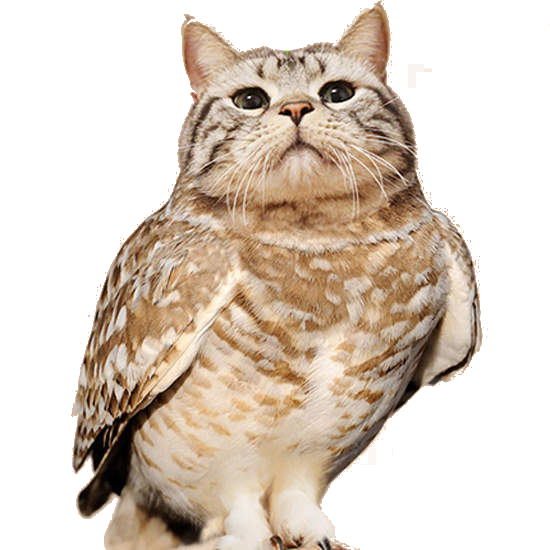

文化
| 位置 | 意義 |
|---|---|
| 日本 | 貓頭鷹的發音「ふくろう」（Fukurou）同不辛苦、招福之意 |
| 中華 | 古代是不祥之兆，有「報喪鳥」、「逐魂鳥」之稱 |
| 印度 | 貓頭鷹是財富女神吉祥天的同伴，是豐饒的信使 |
| 希臘 | 貓頭鷹象徵智慧，也是女神雅典娜的使者 |
| 台灣-布農族 | 送子鳥，也是嬰兒的守護神 |
| 台灣-阿美族 | 森林的守護神，夜間登臨傳遞族人婦女懷孕的佳音 |
| 台灣-卑南族 | 鳴叫是帶來喜訊 |
| 台灣-邵族 | 靈鳥，是吉祥的象徵 |
| 台灣-達悟族 | 不吉利的象徵 |

臨演
曾飾演英國系列奇幻小說《哈利波特》裡的虛構角色-嘿美(主角哈利波特飼養的一隻貓頭鷹)。除作為寵物外，牠也為哈利波特擔當著信使的工作。
在電影第七集《哈利波特：死神的聖物上》裡哈利波特在離開德思禮家前就已將嘿美放走。而後當眾多食死人在空中追擊哈利等人之時，嘿美卻飛回替哈利擋下一道索命咒，犧牲而死。
戲裡如此感人的片段，現實中卻引發了一些國家飼養貓頭鷹的熱潮，然而在2001年的英國也開始出現棄養貓頭鷹的現象，同時，也有保育人士出來批評這種現象恐會對貓頭鷹的生存造成危害。